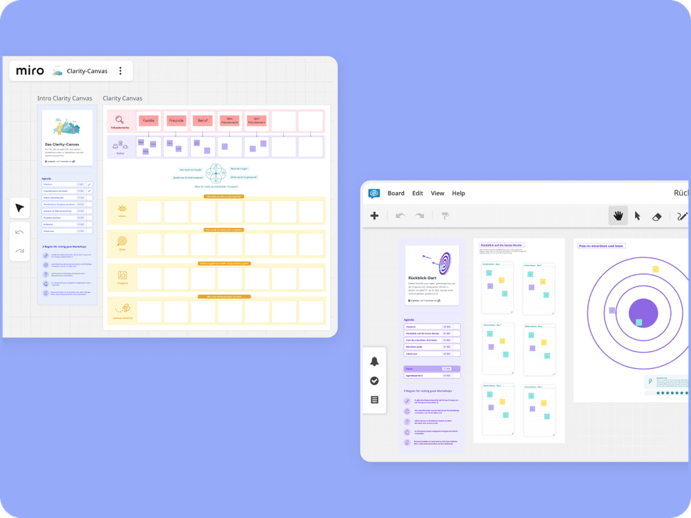
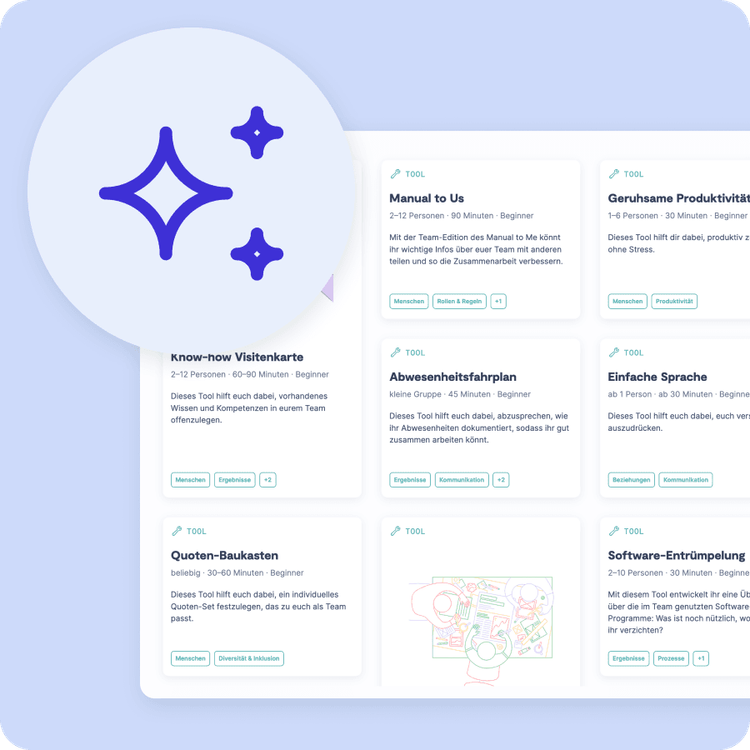

Alle Whiteboards in Miro und Conceptboard wurden überarbeitet, mit klaren Agenden, hilfreichen Workshop-Regeln und ganz viel Flexibilität beim Anpassen und Umbauen.
Einheitliches Design: Alle Whiteboards folgen jetzt einem standardisierten Aufbau für bessere Übersichtlichkeit.
Maximale Flexibilität: Dank nativer Elemente kannst du die Boards nach deinen Bedürfnissen anpassen.
Klare Agenden: Integrierte Zeitpläne sorgen in vielen Tool-Whiteboards dafür, dass alle Teilnehmenden genau wissen, was wann passiert.
Eingebaute Workshop-Regeln: Für faire Redezeiten, volle Aufmerksamkeit und eine richtig gute Zusammenarbeit.


Neue Features und Verbesserungen warten auf dich – schau rein und entdecke, was sonst noch alles neu auf 9 Spaces ist!